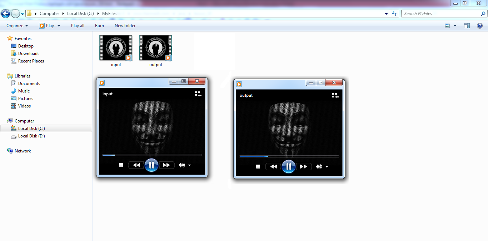

Javaالتعامل مع الملفات في جافا
مقدمة
غالباً ما تحتاج البرامج إلى تبادل البيانات مع مصادر خارجية, سواء كان ذلك لإستقبال البيانات من مصدر ما أو لإرسال البيانات إلى مستقبل ما.
المرسل و المستقبل في عملية تبادل البيانات قد تكون لهم أشكال مختلفة أمثلة:
يمكن تبادل البيانات بين البرنامج و الملف, أو بين البرنامج و الشبكة, أو بين البرنامج و قاعدة بيانات, أو بين البرنامج و برنامج إلخ...
و بالنسبة لأنواع البيانات التي يمكن نقلها. يمكنك تبادل أي نوع من أنواع البيانات أمثلة:
نصوص, صور, ملفات صوتية, برامج, إلخ..
لغة جافا توفر لك الحزمة java.io و التي تحتوي على جميع الكلاسات التي تحتاجها للتعامل مع الملفات, سواء لإدخال بيانات جديدة في الملف Input Operation أو لإستخراج بيانات موجودة في الملف Output Operation, و حتى لإنشاء أو حذف الملفات. و من هنا جاء الإسم I/O.
عملية إدخال البيانات أو إستخراجها من الملفات تسمى Streaming data, و هذه الكلمة تعني تدفق البيانات في اللغة العربية.
سميت هذه العملية ( تدفق البيانات ) لأنك عندما تتعامل مع الملفات سواء للقراءة أو الكتابة فأنت تقوم بذلك على دفعات صغيرة, بمعنى أنك تبرمج على سبيل المثال برنامج يفتح ملف معين و يقرأ منه حرف واحد أو مجموعة أحرف في كل دفعة حتى نقل كامل بيانات الملف. سترى ذلك لاحقاً بتفصيل.
Streams
الكلمة Streams تعني سلسلة من البيانات, يتم إستخراجها أو إدخالها في ملف معين.
هناك نوعين من الـ Streams و هما: input stream و output stream.
لذلك تم بناء الكلاسات التالية للتعامل مع الـ Streams:
في هذا الدرس سنشرح لك كيف تستخدم الحزمة I/O لقراءة أي نوع من الملفات و سنشرح فقط الكلاسات الأكثر استخداماً فيها.
طريقة التعامل مع الملفات
عندما تتعامل مع الملفات عليك إتباع نمط معين حتى تتجنب حدوث أي خطأ في البرنامج, و لقد قمنا بوضع خطوات ستساعدك كثيراً في فهم عملية نقل البيانات, و وضعنا أيضاً بعض الملاحظات التي يجب عليك الإنتباه لها أثناء تحديد مكان وجود الملفات التي سيتعامل البرنامج معها.
الخطوات التي يجب إتباعها لقراءة البيانات من ملف و كتابتها في ملف آخر
إنشاء كائن يمثل الملف الذي تريد قراءة البيانات منه.
إنشاء كائن يمثل الملف الذي تريد كتابة البيانات فيه.
عليك وضع جميع الأوامر التي تتعامل مع الملفات بداخل الجملة try لأن البرنامج قد يتعرض لعدة مشاكل عندما يتعامل مع الملفات و التي سنذكرها لك لاحقاً.
تحديد مسار و إسم و نوع الملف للكائن الذي يمثل الملف الذي سيتم قراءة البيانات منه.
تحديد مسار و إسم و نوع الملف للكائن الذي يمثل الملف الذي سيتم كتابة البيانات فيه.
تعريف متغير من النوع int.
إستخدام حلقة بشكل متوازي بين الملفين, أي في كل دورة من دورات هذه الحلقة نقرأ حرف من الملف الأول و نضعه في الملف الثاني.
إستخدام الدالة read() لقراءة حرف من الملف الأول, بعدها يجب تخزين هذا الحرف في المتغير.
إستخدام الدالة write() لكتابة الحرف الموجود في المتغير في الملف الثاني.
في الأخير عليك التأكد من إغلاق الملفات التي حاولت الإتصال معها سواء نجحت عملية النسخ أم لم تنجح, لذلك عليك إستدعاء الدالة close() في الجملة finally لإغلاق أي كائن متصل بالملفات حتى لا تعرض الملفات لأي خطر.
هذه الصورة توضح لك كيف تتم عملية نقل المحتوى من ملف لآخر, و هذا السيناريو هو نفسه تقريباً في جميع عمليات نقل البيانات و هو يستمر في نقل الأحرف الواحد تلو الآخر حتى آخر حرف موجود في الملف عندما نكتبه بالشكل الصحيح بداخل حلقة.

الدالة read() كما هو موضح في الصورة تقرأ حرف واحد من الملف و ترجعه كلما تم إستدعائها.
في حال تم قراءة جميع الأحرف الموجودة في الملف, ثم حاولت الدالة read() قرائة حرف من جديد, ستقوم بإرجاع 1-.
إذاً عندما ترجع الدالة read() القيمة 1- فهذا يعني أنه تم تخطي آخر حرف موجود في الملف.
من هنا جائت فكرة أنه يمكنك إستخدام الدالة read() و القيمة 1- كشرط أساسي لإيقاف عملية قرائة البيانات بعد آخر حرف يتم قرائته.
تحديد مسار الملفات التي تحاول التعامل معها
من الأشياء المهمة التي عليك الإنتباه لها عندما تتعامل مع الملفات هي معرفة كيف يتعامل نظام التشغيل الذي تبني برنامجك لأجله مع المسارات.
لنفترض أنه عندنا ملف موجود بداخل 3 مجلدات و نريد الوصول إليه كما في الصورة التالية:
الآن سترى كيف يتم تحديد المسار الموجود فيه الملف على أشهر أنظمة التشغيل.
لاحظ كيف أننا نضع نفس أسماء المجلدات و نفس إسم الملف لكي نصل للملف text. الإختلاف الوحيد هو الرمز الذي نضعه بعد كل مجلد.
A\\B\\C\\test.txt // هكذا نصل للملف Mac و Windows على
A/B/C/test.txt // هكذا نصل للملف Linux و Unix على
في جافا يمكنك إستخدام الأسلوب الذي تريده مهما كان نظام التشغيل, ثم تقوم بتحويل المسار عنك ليتناسب مع نظام التشغيل.
Character Streams
الكلاسات التي تصنف كـ Character Streams مصممة للتعامل مع الملفات النصية العادية التي تعتمد على الترميز unicode, أي كل حرف في الملف يتم تمثيله بـ 2 Bytes.
هناك العديد من الكلاسات التي تنتمي للـ Character Streams لكن الكلاسات الأكثر إستخداماً هما : FileReader و FileWriter.
تقنياً
الكلاسات FileReader و FileWriter يعتمدون على الكلاسات FileInputStream و FileOutputStream.
الفرق الوحيد بينهم هو أن الكلاس FileReader يقرأ 2 Bytes في كل مرة و الكلاس FileWriter يكتب 2 Bytes في كل مرة.
الترميز unicode يمثل كل حرف موجود في الملف بـ 2 Bytes.
إذاً الكلاس FileReader يقرأ حرف من الملف في كل مرة و الكلاس FileWriter يكتب حرف في الملف في كل مرة.
مثال
في حال كان عندنا ملف إسمه input.txt موجود في المسار C:\\MyFiles\\ كما في الصورة التالية:
و نريد إنشاء نسخة ثانية منه في نفس المسار إسمها output.txt كما في الصورة التالية:
نكتب الكود التالي.
مثال
Main.java
import java.io.FileReader;
import java.io.FileWriter;
import java.io.IOException;
public class Main {
public static void main(String[] args) throws IOException {
FileReader in = null;
FileWriter out = null;
try {
in = new FileReader("C:\\MyFiles\\input.txt");
out = new FileWriter("C:\\MyFiles\\ouput.txt");
int c;
while ((c = in.read()) != -1) {
out.write(c);
}
}
catch(IOException e) {
System.out.println("There is IOException!");
}
finally {
if (in != null) {
in.close();
}
if (out != null) {
out.close();
}
}
}
}
شرح الكود
import java.io.FileReader;
import java.io.FileWriter;
import java.io.IOException;
public static void main(String[] args) throws IOException {
FileReader in = null;
FileWriter out = null;
in = new FileReader("C:\\MyFiles\\input.txt");
out = new FileWriter("C:\\MyFiles\\ouput.txt");
int c;
هنا قمنا بتحديد الملف الذي سيمثله الكائن in.
الملف input.txt الموجود في المسار C:\\MyFiles\\ أصبح متمثلاً بالكائن in.
و قمنا بخلق ملف جديد على إسمه output.txt و يمثله الكائن out.
الملف output.txt حتى الآن عبارة عن ملف فارغ موجود في المسار C:\\MyFiles\\.
المتغير c سنستخدمه كوسيط بين الملفين عند نقل البيانات.
while ((c = in.read()) != -1) {
out.write(c);
}
الكلاسات المصممة للتعامل مع الـ Character Streams
في جافا تم بناء الكلاسات التي تتعامل مع الـ Character Streams بشكل متناسق كما في الصورة التالية.
الكلاس Reader هو الكلاس الأساسي لقراءة الأحرف من الملفات. و الكلاس Writer هو الكلاس الأساسي لكتابة الأحرف في الملفات.
أهم كلاسَين للتعامل مع الـ Character Streams هما الكلاس BufferedReader و الكلاس BufferedWriter بحيث يوفران لك كثير من الدوال التي تمكنك من التعامل مع الملفات بسهولة و مرونة و استخدام الـ buffer للحصول على أفضل أداء ممكن.
طريقة التعامل مع هذه الكلاسات
عندما تستخدم هذه الكلاسات ستستخدم مبدأ يسمى Upcasting.
و المقصود من هذا أنك مثلاً تنشئ كائن من الكلاس InputStream ثم تضع فيه أي كائن من الكلاسات التي ترث منه, مثل InputStreamReader.
بمعنى آخر تنشئ كائن من الكلاس InputStream ثم تحدد أنك تريد إستخدام الكلاس FileInputStream.
فكرة الـ Buffer و أهميتها عند التعامل مع الملفات
إفترض أن برنامجك سيقرأ على سبيل المثال ملف حجمه 10 MB, و التي تساوي 10,485,760 Bytes.
هل ستستدعي الدالة read() أكثر من 10 ملايين مرة حتى تقرأ هذا الملف؟!
حتماً لا لأنك إن فعلت ذلك ستهلك المعالج و الذاكرة و القرص الصلب لقراءة هذا الملف البسيط, و من هنا جائت فكرة الـ Buffer.
مفهوم الـ Buffer
الـ Buffer عبارة عن مساحة مؤقتة للتخزين يتم إنشاءها في الذاكرة من أجل قراءة كمية كبيرة من المعلومات, ثم يتم التخلص منها عند الإنتهاء.
عندما تستخدم كائن يتعامل مع الـ Buffer فهذا الكائن سينشئ هذه المساحة المؤقت في الذاكرة.
الآن إذا رجعنا للمثال السابق, كان يمكنك قراءة 1000 Bytes أو أكثر على سبيلا المثال في كل مرة تستدعي فيها الدالة read() بدل إستدعاءها لقراءة 1 Byte في كل مرة. و لو كان هذا مثال حي للاحظت الفارق في السرعة بين الأسلوبين.
في الجدول التالي وضعنا بعض كلاسات الـ Character Streams التي تستخدم للقراءة من الملفات.
| الكلاس مع تعريفه |
class InputStreamReader
الكلاس InputStreamReader يقرأ بيانات الملف كـ bytes و يحولهم لأحرف حسب الترميز الذي نقوم بتحديده في الكونستركتور.
تابع القراءة » |
class FileReader
الكلاس FileReader يرث من الكلاسات InputStreamReader و Reader و هو يستخدم لقراءة Streams من الأحرف.
تابع القراءة » |
class BufferedReader
الكلاس BufferedReader يقرأ أحرف كائن الـ InputStreamReader و يضعهم في الـ buffer. و هذا يوفر لك طرق عديدة لقراءة المحتوى من الـ buffer. مثل قراءته حرفاً حرفاً, أو تخزينه في مصفوفة, أو قراءته سطراً سطراً.
يمكنك تحديد حجم الـ buffer, أو استخدام الحجم الإفتراضي لها و الذي يعتبر جيداً في معظم الحالات.
تابع القراءة » |
في الجدول التالي وضعنا بعض كلاسات الـ Character Streams التي تستخدم للكتابة في الملفات.
| الكلاس مع تعريفه |
class OutputStreamWriter
الكلاس OutputStreamWriter يكتب الأحرف في الملف كـ bytes حسب الترميز الذي نقوم بتحديده في الكونستركتور.
تابع القراءة » |
class FileWriter
الكلاس FileWriter يرث من الكلاسات OutputStreamWriter و Writer و هو يستخدم لكتابة نص في الملف.
تابع القراءة » |
class BufferedWriter
الكلاس BufferedWriter يضع أحرف كائن الـ OutputStreamWirter في الـ buffer. و هذا يوفر لك طرق عديدة لكتابة محتوى الـ buffer في الملف. مثل كتابته حرفاً حرفاً, أو تخزينه في مصفوفة, أو كتابته سطراً سطراً.
يمكنك تحديد حجم الـ buffer, أو استخدام الحجم الإفتراضي لها و الذي يعتبر جيداً في معظم الحالات.
تابع القراءة » |
Byte Streams
الكلاسات التي تصنف كـ Byte Streams مصممة للتعامل الملفات الغير نصية التي تخزن المحتوى بشكل سلسلة بيانات من 1 Byte مثل ( PNG, MP4, MP3.. ) و يمكنها نقل الأحرف العادية شرط أن تكون الأحرف المستخدمة تتألف من 1 Byte حتى تنقل بشكل صحيح.
هناك العديد من الكلاسات التي تنتمي للـ Byte Streams لكن الكلاسات الأكثر إستخداماً هما : FileInputStream و FileOutputStream.
مثال
في حال كان عندنا ملف إسمه input.MP4 موجود في المسار C:\\MyFiles\\ كما في الصورة التالية:
و نريد إنشاء نسخة ثانية منه في نفس المسار إسمها output.MP4 كما في الصورة التالية:

نكتب الكود التالي.
مثال
Main.java
import java.io.FileInputStream;
import java.io.FileOutputStream;
import java.io.IOException;
public class Main {
public static void main(String[] args) throws IOException {
FileInputStream in = null;
FileOutputStream out = null;
try {
in = new FileInputStream("C:\\MyFiles\\input.MP4");
out = new FileOutputStream("C:\\MyFiles\\ouput.MP4");
int c;
while ((c = in.read()) != -1) {
out.write(c);
}
}
catch(IOException e) {
System.out.println("There is IOException!");
}
finally {
if (in != null) {
in.close();
}
if (out != null) {
out.close();
}
}
}
}
شرح الكود
import java.io.FileInputStream;
import java.io.FileOutputStream;
import java.io.IOException;
public static void main(String[] args) throws IOException {
FileInputStream in = null;
FileOutputStream out = null;
in = new FileInputStream("C:\\MyFiles\\input.MP4");
out = new FileOutputStream("C:\\MyFiles\\ouput.MP4");
int c;
هنا قمنا بتحديد الملف الذي سيمثله الكائن in.
الملف input.mp4 الموجود في المسار C:\\MyFiles\\ أصبح متمثلاً بالكائن in.
و قمنا بخلق ملف جديد على إسمه output.MP4 و يمثله الكائن out.
الملف output.MP4 حتى الآن عبارة عن ملف فارغ موجود في المسار C:\\MyFiles\\.
المتغير c سنستخدمه كوسيط بين الملفين عند نقل البيانات.
while ((c = in.read()) != -1) {
out.write(c);
}
ملاحظة
عندما تقوم بتشغيل هذا البرنامج. سيحتاج إلى بعض الوقت حتى ينتهي من عملية النسخ بشكل كامل (أي لا تظنه معلق), و في حال قمت بإيقاف البرنامج أثناء عمله, إفتح الملف Output.MP4 و ستجد أن الجزء الأخير في الفيديو مفقود.
الكلاسات المصممة للتعامل مع الـ Byte Streams
في جافا تم بناء الكلاسات التي تتعامل مع الـ Byte Streams بشكل متناسق كما في الصورة التالية.

الكلاس InputStream هو الكلاس الأساسي لقراءة البيانات من ملف. و الكلاس OutputStream هو الكلاس الأساسي لكتابة البيانات في ملف.
أهم كلاسَين للتعامل مع الـ Streams هما الكلاس FileInputStream و الكلاس FileOutputStream بحيث يوفران لك كثير من الدوال التي تمكنك من التعامل مع الملفات بسهولة و مرونة.
في الجدول التالي وضعنا بعض كلاسات الـ Byte Streams التي تستخدم للكتابة في الملفات.
| الكلاس مع تعريفه |
class FileInputStream
الكلاس FileInputStream يستخدم لقراءة البيانات من الملفات.
تابع القراءة » |
class ByteArrayInputStream
الكلاس ByteArrayInputStream يسمح باستخدام الـ buffer في الذاكرة كـ InputStream. و هو يقرأ البيانات من المصدر كمصفوفة نوعها byte.
تابع القراءة » |
class DataInputStream
الكلاس DataInputStream يستخدم لقراءة البيانات البدائية primitive data types من ملف معين.
تابع القراءة » |
في الجدول التالي وضعنا بعض كلاسات الـ Byte Streams التي تستخدم للقراءة من الملفات.
| الكلاس مع تعريفه |
class FileOutputStream
الكلاس FileOutputStream يستخدم لإنشاء ملف جديد و كتابة البيانات فيه.
في حال وجود ملف يحمل نفس الإسم و النوع في نفس المسار الموضوع للـ OutputStream, سيتم تبديل الملف القديم بملف الـ OutputStreamالجديد.
تابع القراءة » |
class ByteArrayOutputStream
الكلاس ByteArrayOutputStream ينشئ buffer في الذاكرة لتخزين بيانات الـ Stream فيها قبل إرسالها للـ OutputStream.
تابع القراءة » |
class DataOutputStream
الكلاس DataOutputStream يستخدم لكتابة البيانات البدائية primitive data types في ملف معين.
تابع القراءة » |
الكلاس File
تم إعداد الكلاس File لمعالجة الملفات و المجلدات.
لا يوجد كلاس خاص لمعالجة المجلدات لأن المجلدات عبارة عن ملفات فارغة يمكنها إحتواء ملفات و مجلدات أخرى.
يستخدم الكلاس File للأغراض التالية:
لخلق ملف أو مجلد جديد.
لحذف ملف أو مجلد موجود.
للبحث عن ملف أو مجلد.
لعرض جميع الملفات و المجلدات الموجودة في المجلد.
لقراءة صلاحيات الملف أو المجلد.
لتغيير صلاحيات الملف أو المجلد.
وضعنا لك هنا أهم المعلومات التي قد تحتاجها حول الكلاس File.
تابع القراءة »
التعامل مع المجلدات
المجلد يسمى directory في البرمجة, و هو عبارة عن ملف يمكنه تخزين ملفات و مجلدات أخرى.
باستخدام كائن من الكلاس File يمكنك إنشاء العدد الذي تريده من المجلدات, و معرفة عدد الملفات الموجودة في مجلد ما.
لتعرف تفاصيل أكثر عن علاقة الكلاس File بالمجلدات, أدرس الكلاس File و ستتعرف على بعض الدوال الموجودة فيه المخصصة للتعامل مع المجلدات.
إنشاء المجلدات
يوجد دالتين في الكلاس File يمكن إستخدامها لإنشاء مجلدات.
الدالة mkdir() تستخدم لإنشاء مجلد واحد, و ترجع true إذا تم إنشاءه بنجاح و false إذا لم فشلة عملية إنشاءه.
إذا فشلت علية إنشاءه فذلك يعني أن المسار الموضوع في كائن الـ File موجود في الأصل, أو أنه لا يمكن إنشاء المجلد لإن المسار الموضوع قبل إسم الملف الذي سيتم إنشائه غير موجود.
الدالة mkdirs() تستخدم لإنشاء مجلد أو أكثر.
هنا في حال كان المسار الموضوع غير موجود ستقوم هي بإنشاءه. أي ستنشئ جميع المجلدات الموضوعة في المسار.
عرض محتوى المجلدات
يمكنك استخدام الدالة list() الموجودة في الكلاس File لعرض جميع الملفات الموجودة في المجلد.
مثال
•في هذا المثال سنقوم بإنشاء مجلد إسمه harmash بداخله سننشئ مجلدين images و videos, و سننشئ فيه أيضاً ملف إسمه index.php.
•بعدها سنقوم بعرض جميع الأشياء الموجودة في المجلد harmash.
Main.java
import java.io.File;
import java.io.IOException;
public class Main {
public static void main(String[] args) throws IOException {
try {
// harmash قمنا بإنشاء هذا المتغير للإشارة إلى المسار الأساسي الذي سيوضع فيه المجلد
String websitePath = "C:\\projects\\harmash\\";
File harmashFolder = new File(websitePath); // الذي سننشئه لاحقاً harmash هنا قمنا بإنشاء كائن يشير لمسار المشروع
File imagesFolder = new File(websitePath + "images"); // harmash الذي سننشئه لاحقاً بداخل المجلد images هنا قمنا بإنشاء كائن يشير للمجلد
File videosFolder = new File(websitePath + "videos"); // harmash الذي سننشئه لاحقاً بداخل المجلد videos هنا قمنا بإنشاء كائن يشير للمجلد
File pageFile = new File(websitePath + "index.php"); // harmash الذي سننشئه لاحقاً بداخل المجلد index.php هنا قمنا بإنشاء كائن يشير للملف
harmashFolder.mkdirs(); // harmash و بداخله المجلد project هنا قمنا بإنشاء المجلد
imagesFolder.mkdir(); // videos هنا قمنا بإنشاء المجلد
videosFolder.mkdir(); // images هنا قمنا بإنشاء المجلد
pageFile.createNewFile(); // index.php هنا قمنا بإنشاء الملف
System.out.println("c:\\projects\\harmash contain: ");
// هنا قمنا بعرض جميع المجلدات و الملفات الموجودة في المشروع
String[] paths = harmashFolder.list();
for (String path:paths) {
System.out.println("- " + path);
}
}
catch(Exception e) {
System.out.println("There is Exception!");
}
}
}
•سنحصل على النتيجة التالية عند التشغيل.
c:\projects\harmash contain:
- images
- index.php
- videos

 محرر الويب
محرر الويب نظام الألوان
نظام الألوان محول الوحدات
محول الوحدات محلل عناوين الشبكات
محلل عناوين الشبكات